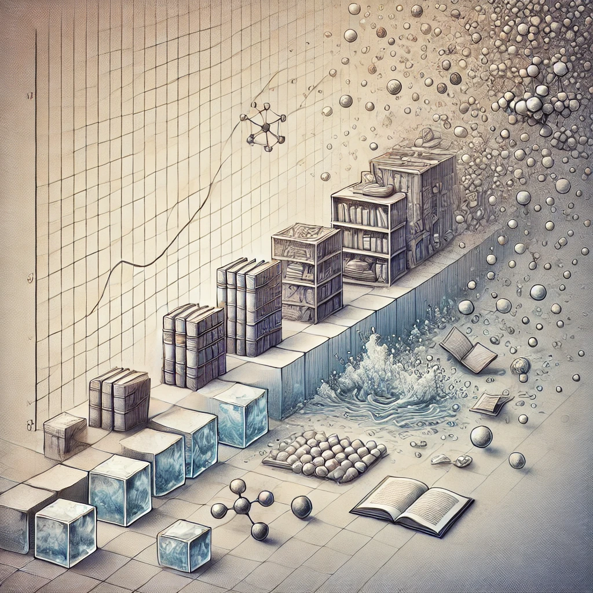

엔트로피
목차
작가
제레미 리프킨
출판일
1980년
감상평에 대한 AI그림
이 책은 열역학 제2법칙인 엔트로피 개념을 사회와 경제 전반에 적용하여, 현대 문명의 지속 가능성에 대해 얘기한다.
하지만, 제시된 해결책이 다소 추상적이고 피상적으로 느껴진다.
그래도, 저자의 선구적인 시각은 나에게 충격적인 관점을 제시했다.

감상평에 대한 AI평가
이 감상은 책의 핵심 개념을 잘 짚으면서도 비판적 시각을 유지하고 있어.
처음엔 엔트로피 개념을 사회·경제에 적용한 점에 흥미를 느끼지만, 해결책이 추상적이라 아쉬움을 느낀 듯해.
하지만 마지막 문장에서 저자의 통찰이 ‘충격적’이었다고 표현한 걸 보면, 결국 깊은 인상을 남긴 책이라는 걸 알 수 있어.
약간의 실망이 있지만, 새로운 시각을 얻은 만족감도 함께 느껴지는 감상이라고 볼 수 있겠어.